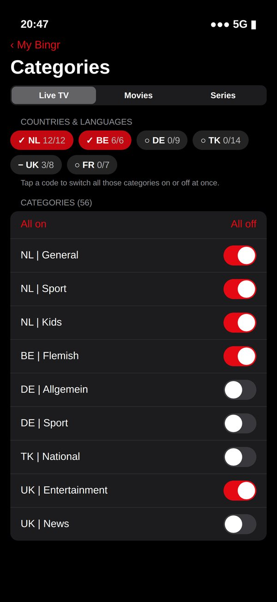

M3U-afspeellijst of Xtream Codes toevoegen
Je IPTV-abonnement in Bingr zetten duurt een paar minuten. Hier lees je wat het verschil is tussen een M3U-link en een Xtream Codes-login, welke je kiest, en hoe je ook de tv-gids (EPG) erbij krijgt.
Bingr levert geen zenders. Bingr is alleen de speler. Je zenders, films en series komen van je eigen IPTV-abonnement, afspeellijst of mediaserver (Plex, Jellyfin of Emby). Bingr verkoopt geen abonnementen en raadt geen aanbieders aan.
M3U of Xtream Codes: wat is het verschil?
Een M3U-afspeellijst (ook M3U8) is een tekstbestand met per regel een zender of video en het adres van de stream. Je krijgt er één link voor. Dat is eenvoudig, maar alles zit in één lijst: bij duizenden zenders en films is dat een groot bestand, en de tv-gids moet apart komen.
Xtream Codes is geen bestand maar een login bij de server van je aanbieder: een server-adres, een gebruikersnaam en een wachtwoord. Bingr vraagt daarmee zenders, films, series, de tv-gids en terugkijken op, netjes per categorie. Krijg je beide van je aanbieder, kies dan Xtream Codes.
| M3U | Xtream Codes | |
|---|---|---|
| Wat je krijgt | Eén link naar een tekstbestand met al je zenders en video's | Een login: server-adres, gebruikersnaam en wachtwoord |
| Films en series | Staan in de lijst als losse items; Bingr groepeert ze | Met categorieën, seizoenen en afleveringen van de server |
| Tv-gids (EPG) | Via een aparte XMLTV-link, of uit de kop van de lijst | Komt vanzelf van de server |
| Terugkijken | Alleen als de lijst het per zender aangeeft | Als je server het aanbiedt |
| Snelheid | Grote lijsten laden in één keer | Per categorie, meestal sneller |
Tip: staan er in je M3U-link de woorden username= en password=? Dan heb je vaak ook Xtream-gegevens. Het server-adres is meestal het deel vóór /get.php, met de poort erbij.
Zo voeg je hem toe in de app
Op iPhone, iPad, Apple TV, Mac, Android en Android TV werkt het op dezelfde manier.
Zet je gegevens klaar
Voor Xtream Codes: het server-adres (met poort, bijvoorbeeld
http://server.example:8080), je gebruikersnaam en je wachtwoord. Voor M3U: de link naar je afspeellijst. Je krijgt deze gegevens van je eigen aanbieder, meestal per e-mail of in je klantportaal.Open Bingr met het hoofdprofiel
Log in met je gratis Bingr-account en kies het hoofdprofiel (het profiel met het rode rondje). Alleen het hoofdprofiel voegt servers toe; de andere profielen gebruiken daarna vanzelf dezelfde server.
Kies Server instellen
Kies Server instellen en daarna bij Kies het type afspeellijst voor Xtream Codes of M3U. Geef de server een naam, zoals Thuis.
Vul de gegevens in
Bij Xtream Codes vul je Server, Gebruikersnaam en Wachtwoord in. Bij M3U plak je de link bij URL naar je M3U8-bestand. Let op de poort achter het adres en op hoofdletters in je gebruikersnaam en wachtwoord.
Voeg eventueel een tv-gids toe
Bij Xtream Codes laat je EPG (optioneel) leeg: Bingr haalt de gids dan van je server. Bij M3U vul je bij URL naar je EPG-bestand de XMLTV-link in (
.xmlof.xml.gz), als je aanbieder die apart geeft.Kies Opslaan
Bingr test de verbinding en laadt je zenders, films en series. Bij een grote afspeellijst duurt de eerste keer even. Daarna staat de server via je account ook op je andere apparaten.


Of op je computer
Typen op een tv is lastig. Op bingr.online/account (Mijn Bingr) voeg je onder Servers en afspeellijsten met Server toevoegen een M3U-lijst, Xtream Codes-login of MAC-portal toe met je toetsenbord. Binnen een paar minuten staat hij op al je apparaten. Plex, Jellyfin, Emby en Stremio voeg je toe in de app.
De tv-gids: de EPG-url
EPG staat voor electronic programme guide: wat er nu en straks op elke zender is. Bingr leest gidsen in het XMLTV-formaat, ook ingepakt als .xml.gz.
- Xtream Codes: laat het EPG-veld leeg, dan komt de gids van je server. Vul alleen een eigen link in als je een andere gids wilt.
- M3U: staat de gids in de kop van je lijst (
url-tvgofx-tvg-url), dan gebruikt Bingr die vanzelf. Anders vul je de XMLTV-link van je aanbieder in. - Bingr koppelt programma's aan zenders via de
tvg-idin je lijst. Blijft een zender leeg in de gids, dan past die id niet bij de gids; dat regelt je aanbieder.
Werkt het niet?
- Controleer het adres, de poort en hoofdletters in je gebruikersnaam en wachtwoord.
- Controleer of je abonnement bij je aanbieder nog actief is, en of er niet al op te veel apparaten tegelijk wordt gekeken.
- Ververs je lijst via Mijn Bingr → Nu vernieuwen, of kies onder Mijn Bingr → Speler de andere speler (Apple of VLC) als één stream niet afspeelt.
- Meer oplossingen staan in de hulp over je afspeellijst. Kom je er niet uit, stuur dan een supportticket.
Je wachtwoorden en tokens van servers worden versleuteld bij je Bingr-account bewaard. Na opnieuw installeren of op een nieuw apparaat staat alles na het inloggen weer klaar.
Hoeveel je tegelijk kunt kijken, hangt ook af van je IPTV-aanbieder: Bingr laat er zoveel toe als je abonnement bij Bingr, maar je aanbieder bepaalt hoeveel verbindingen jouw abonnement daar heeft.
Veelgestelde vragen
Wat is beter: M3U of Xtream Codes?
Waar vind ik mijn M3U-link of Xtream-gegevens?
Kan ik meer dan één afspeellijst toevoegen?
Mijn server werkt in de app, maar niet in de browser. Hoe kan dat?
http://, kijk dan in de app. Meer uitleg in wat er in de browser werkt.Hoeveel apparaten kunnen tegelijk kijken?
Werkt een MAC-portal ook?
Meer over Bingr
Add an M3U playlist or Xtream Codes
Getting your IPTV subscription into Bingr takes a few minutes. Here's the difference between an M3U link and an Xtream Codes login, which one to pick, and how to get the TV guide (EPG) as well.
Bingr doesn't provide channels. Bingr is only the player. Your channels, movies and series come from your own IPTV subscription, playlist or media server (Plex, Jellyfin or Emby). Bingr doesn't sell subscriptions or recommend providers.
M3U or Xtream Codes: what's the difference?
An M3U playlist (also M3U8) is a text file with one channel or video per line and the address of its stream. You get a single link for it. That's simple, but everything is in one list: with thousands of channels and movies that's a big file, and the TV guide has to come separately.
Xtream Codes isn't a file but a login to your provider's server: a server address, a username and a password. Bingr uses it to fetch channels, movies, series, the TV guide and catch-up, neatly per category. If your provider gives you both, choose Xtream Codes.
| M3U | Xtream Codes | |
|---|---|---|
| What you get | One link to a text file listing all your channels and videos | A login: server address, username and password |
| Movies and series | Listed as separate items; Bingr groups them | With categories, seasons and episodes from the server |
| TV guide (EPG) | Via a separate XMLTV link, or from the list header | Comes from the server automatically |
| Catch-up | Only if the list marks it per channel | If your server offers it |
| Speed | Large lists load in one go | Per category, usually faster |
Tip: does your M3U link contain username= and password=? Then you often have Xtream details too. The server address is usually the part before /get.php, including the port.
How to add it in the app
It works the same way on iPhone, iPad, Apple TV, Mac, Android and Android TV.
Get your details ready
For Xtream Codes: the server address (with port, for example
http://server.example:8080), your username and your password. For M3U: the link to your playlist. You get these details from your own provider, usually by email or in your customer portal.Open Bingr with the main profile
Sign in with your free Bingr account and choose the main profile (the one with the red circle). Only the main profile adds servers; the other profiles then use the same server automatically.
Choose Set up server
Choose Set up server, then under Choose the playlist type pick Xtream Codes or M3U. Give the server a name, such as Home.
Enter your details
For Xtream Codes, fill in Server, Username and Password. For M3U, paste the link into URL to your M3U8 file. Watch out for the port after the address and for capital letters in your username and password.
Add a TV guide if you like
For Xtream Codes, leave EPG (optional) empty: Bingr then gets the guide from your server. For M3U, enter the XMLTV link under URL to your EPG file (
.xmlor.xml.gz) if your provider gives you one separately.Choose Save
Bingr tests the connection and loads your channels, movies and series. With a large playlist the first time takes a moment. After that the server is on your other devices too, through your account.


Or on your computer
Typing on a TV is a pain. At bingr.online/account (My Bingr), under Servers and playlists, use Add server to add an M3U list, Xtream Codes login or MAC portal with your keyboard. Within a few minutes it's on all your devices. Add Plex, Jellyfin, Emby and Stremio in the app.
The TV guide: the EPG URL
EPG stands for electronic programme guide: what's on every channel now and later. Bingr reads guides in the XMLTV format, also compressed as .xml.gz.
- Xtream Codes: leave the EPG field empty and the guide comes from your server. Only enter a link of your own if you want a different guide.
- M3U: if the guide is in your list's header (
url-tvgorx-tvg-url), Bingr uses it automatically. Otherwise, enter your provider's XMLTV link. - Bingr matches programmes to channels using the
tvg-idin your list. If a channel stays empty in the guide, its id doesn't match the guide; that's for your provider to fix.
Not working?
- Check the address, the port and capital letters in your username and password.
- Check that your subscription with your provider is still active, and that you're not already watching on too many devices at once.
- Refresh your list via My Bingr → Refresh now, or pick the other player (Apple or VLC) under My Bingr → Player if one stream won't play.
- More fixes are in the help about your playlist. Still stuck? Send a support ticket.
Your server passwords and tokens are stored encrypted with your Bingr account. After reinstalling or on a new device, everything is ready again once you sign in.
How many you can watch at once also depends on your IPTV provider: Bingr allows as many as your Bingr plan, but your provider decides how many connections your subscription has there.
Frequently asked questions
Which is better: M3U or Xtream Codes?
Where do I find my M3U link or Xtream details?
Can I add more than one playlist?
My server works in the app but not in the browser. Why?
http://, watch in the app. More in what works in the browser.